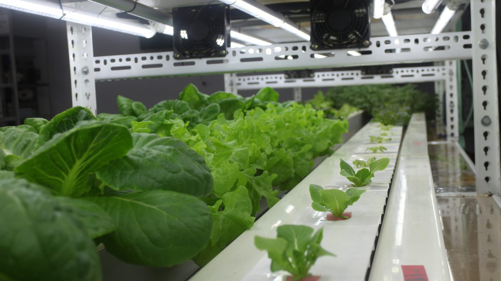
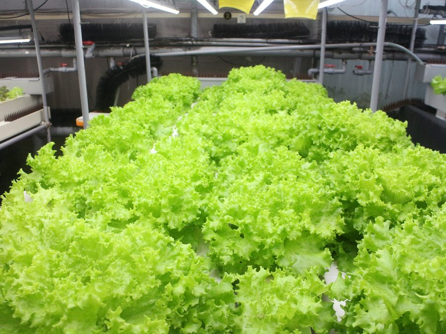
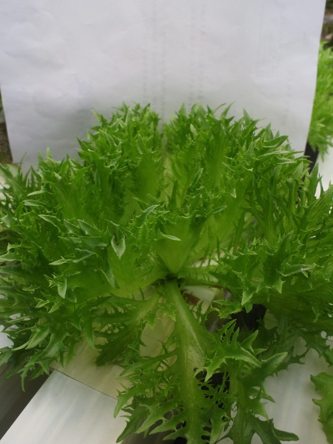

桃園大溪添丁養生黑木耳桃園大溪的有機菇農場，採自然栽培，不用化學農藥和合成肥料，品項都通過有機認證。也是農業部選出的第四屆百大青農。 種什麼香菇、黑木耳、猴頭菇、白雪菇、紫雲菇 有機乾燥香菇有機鮮猴頭菇有機乾燥猴頭菇 買這家農場的商品
示意照片 宜蘭三星宜蘭葉菜園（示意）示意用的第二家農場，用來看多家農場時的版面。之後換成真的合作農場資料。 種什麼小白菜、青江菜、菠菜 示意照片小白菜示意照片青江菜示意照片菠菜 買這家農場的商品
示意照片 雲林古坑雲林香草田（示意）示意用的第三家農場，種料理用的香草。之後換成真的合作農場資料。 種什麼九層塔、香菜、薄荷 示意照片九層塔示意照片香菜示意照片薄荷 買這家農場的商品